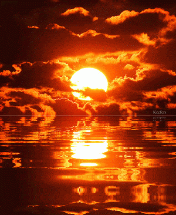

DEFINICIÓN
La luz es una forma de energia que nos permite ver lo que nos rodea.
Es toda radiación electromagnética que se propaga en forma de ondas en cualquier espacio,
está es capaz de viajar a través del vacío a una velocidad de aproximadamente 300.000 kilometros por segundo.
La luz también es conocida como energía luminosa.
Existen diferentes fuentes de luz que las podemos clasificar en naturales y artificiales.
El Sol es la principal fuente natural e importante de luz sobre la Tierra.
En cuanto a las fuentes artificiales se estaría hablando de la luz elétrica de una bombilla,
la luz de una vela, de la lámparas de aceite, entre otras.

CARACTERISTICAS
INICIO